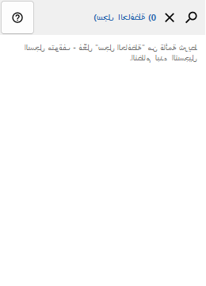
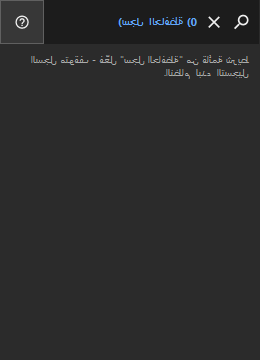

سجل الحافظة
الغرض
يُحفظ السجل محليًا فقط ويُشفَّر بواسطة Windows DPAPI لحسابك.


ترتيب الاستخدام
اقرأ الشروح المرقمة واختر القيم المطلوبة ثم تابع باستخدام أمر النافذة.
يُحفظ السجل محليًا فقط ويُشفَّر بواسطة Windows DPAPI لحسابك.


اقرأ الشروح المرقمة واختر القيم المطلوبة ثم تابع باستخدام أمر النافذة.